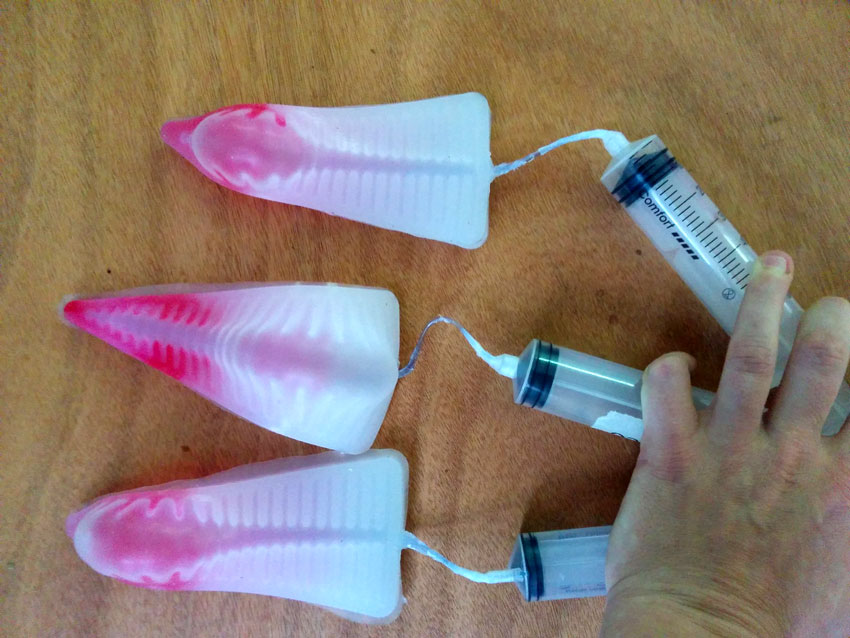

Project development

What tasks have been completed, and what tasks remain?
According to the original plan, only wto things have been not accomplished even if planned: the power supply device part (at the moment is powered by a laptop and a power bench) and the IoT part. The Pod have been conceived to collect data and to transmit them online using an ESP8266. This part has not been accomplished since I had no more time available.What has worked?
I develop my project in a very fast time span. Indeed, I changed my original final project idea (that was to make a Brain computer Interface device) quite close to the end of the Academy. This meant for me a very short time for research and development of the Breathing Pod. So, considered that, I can say that the prototype has worked, and considering the several problems I faced while prototyping the object, I can say that I have planned the whole process in a realistic way.What has not worked?
Three main things have not worked:- Bio inspired behaviour
- Schedule wasn't foreseeing unpredictable critical issues, meaning, I had not time to fine tune many many things
- As unpredictable critical and time consuming issue, I discover about a sort of "soft actuators disease" that complicated a lot the prototyping process (documented in depht below)
// Bio inspired behaviour
The breathing pod needs to be better developed about the bio-inspired behaviour that it is intended to have. First, to use a pump to inflate muscle is not a solution. It is too noisy, to mechanic, very far from being able to simulate a bio-thing behaviour. It is true that the state of art of soft robotics research available online is mainly related to ... actual robotics. This means that the inflating systems so far used for soft robots are all very noisy and conceived to accomplish mechanical tasks. So: no references about silent, mild, bio-inspired oriented inflating system.I need to start a more concrete research and find out a better device for inflating air. This is definitely also my fault: I underestimated the problem, and the time necesary for such kind of art-related device feature. This aspect must be worked also within the software realm: control a pump according to a data detection and make some led blincking is not enough. To simulate "life" through cinetic actuators and through light output, I need to make a deeper study on these two elements: eletronically controlled light and movement. I thought that the life-like behaviour of the siluycon muscles would have been anough for simulating living things, but I discover that this is only partially true.
// Development schedule too linear
About this point, I can't really complain. This is the learned lesson that I wanted to learn. I wasn't considering unpredictable problems, like the one I describe below about soft-actuators behaviour, and I used a lot of time to solve unplanned issue. That meant that I had no remaining time to develop the IoT part of my device, and that is quite pity because thi Pod MUST be connected. I think that for the coming experiences, I wil plan a 35% of extra time for unpredicted critical issues.// PneuNetz diseases
The most incredible thing is that during this casting process I discover a kind of disease, a kind of inborn deformation that affected two of my three muscles. As the image below shows, only the central muscle can be considered "sane". Indeed, the other two get not inflated in their superior part but only close to the tip, and in that point they show a very thin silycon layer that is super deformable and, as I will discover once connected the electo pump, able to "suck" that whole inflated air, leaving the others almost empty and not inflated.
This discovery made me casting one more muscle that wasn't showing the deformation. So, to recap: on 4 muscle than I have casted using same quantity of same material and same molds, 2 of them were presenting a deformation, and two were "sane". I am quite of sure that the problem is not related to quantity of material or casting methodes or errors. The problem I think is basically that to be sure of casting 3 elements with same features, it is important to cast them in the same moment, provided that you have enogh mold to make them during the same process, at least the main body part. When close to presentation I realized that my device wasn't working as I planned because of this deformation, the only solution I found was to try making one more muscle. But then, the risk of having again a diseased muscle was too high. And this silycon is super expensive.
What have you learned?
The main thing I learned is that when you invent, design and make something, such thing is never working at the begin. And that whatever is the subject of your invention, is not intended to work immediately. The main skill you get while growing your experience in this field is to make the thing you (desired and) prototyped .. working. You get the skill of understanding where to go searching the bug, and several methods to discover the problem. Debugging is the most complicated part of the process, doesn't matter if we are talking about hardware, mechanical solution, project planning or software writing.The other aspect is more phylosophycal and related to persistence, that I think it is something playing a big role in this field. Quoting Ray Kroc:
"Nothing in the world can take the place of persistence. Talent will not; nothing in the world is common than unsuccessful men with talent. Genius will not; unrewarded genius is almost a proverb. Education will not; the world is full of educated derelicts. Persistence and determination alone are omnipotent."